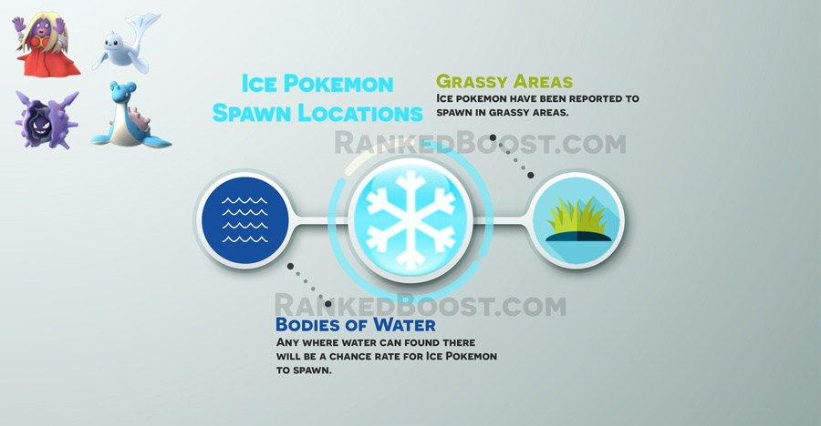

Where Do I Catch Ice Pokemon In Pokemon Go: Ice pokemon are spawning near large bodies of water and Large Grassy areas. Pokemon Go players in areas with snow currently will have a higher spawn rate for ice pokemon then those who are not.
How To Get Ice Type Pokemon Tips:
Where Do I Find Ice Pokemon? – ( Ice Pokemon Locations )
Confirmed Ice Pokemon Go Spawn Locations: Bodies of Water – Ski Resorts – Glacier – Grassy Areas
Unconfirmed Ice Pokemon Go Spawn Locations:
There is a Total of 5 Pokemon Go Ice Pokemon: Jynx, Dewgong, Cloyster, Lapras and Articuno. Articuno is a legendary pokemon not found in the wild. Legendary pokemon will most likely only be obtained in special events at a later date.
